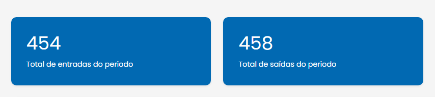
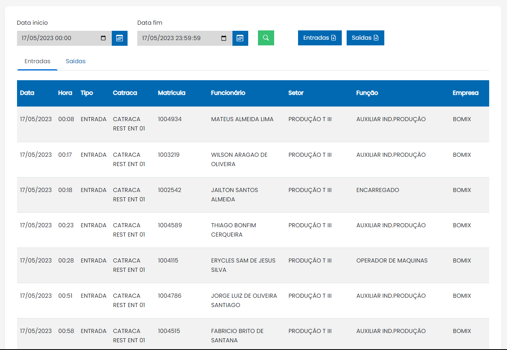
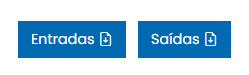

Função
O relatório do almoço tem como principal função demonstrar ao usuário as entradas e saídas do refeitório além de permitir a checagem de quem entrou e saiu em um período de tempo específico.
Medidor de entrada e saída

Tabela com os dados de entrada e saída dos funcionários

Os campos de "Data início" e "Data fim" são utilizados para filtrar as entradas e saídas por períodos específicos. Os campos entrada e saída com uma página e uma seta dentro da página servem para realizar o download do respectivo relatório de catraca.
